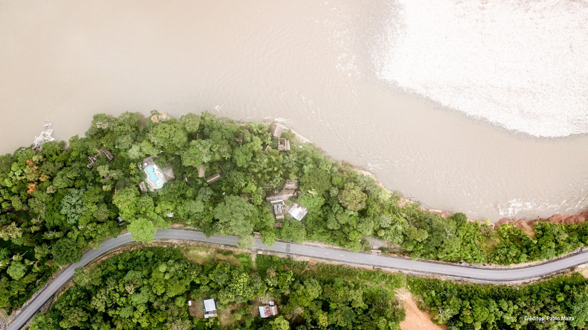
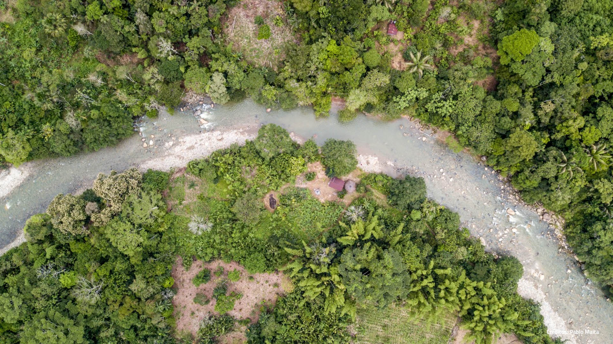
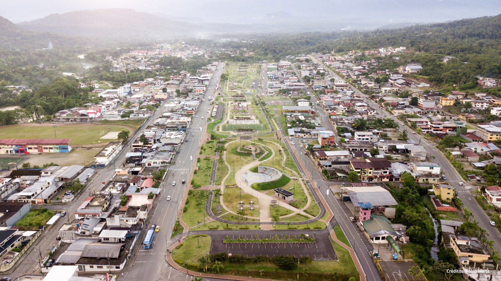
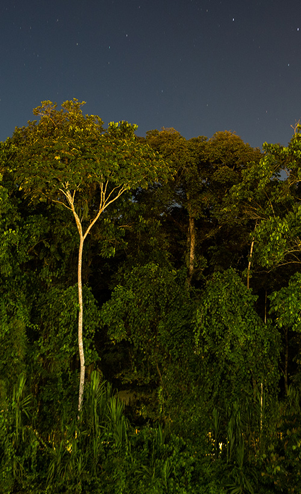
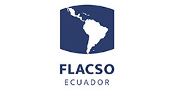
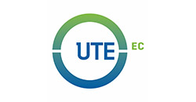

-

Río Napo
Créditos Pablo Maita -

Río Tena
Créditos Pablo Maita -

Parque Lineal Tena
Créditos Pablo Maita

La Red Universitaria de Estudios Urbanos del Ecuador – CIVITIC fue creada a partir del evento Hábitat 3 Alternativo (H3A), realizado en Quito en octubre de 2016, el cual convocó a un grupo de especialistas en el ámbito urbano, quienes vieron la necesidad de crear, coordinar y articular espacios alternativos de diálogo antes, durante y después del Hábitat III Oficial. En este marco, CIVITIC se propuso debatir, reflexionar e investigar sobre cuestiones urbanas en Ecuador, desde una perspectiva inter/transdisciplinaria y comparativa.
Desde su creación, CIVITIC ha organizado tres congresos nacionales: uno en Cuenca (I CEC, 4-6 octubre 2017), otro en Guayaquil (II CEC, 17-19 octubre 2018) y otro en Loja (III CEC, 14-16 de noviembre de 2019); tres seminarios internacionales en Loja, Quito y Ambato; dos conferencias magistrales, también virtuales; y 25 conversatorios virtuales. Además, ha publicado tres libros-memoria del I CEC sobre Derecho a la ciudad, Economía urbana y gobernanza, y Patrimonio; y cuatro números de la Revista Universitaria de Estudios Urbanos de Ecuador.
Lugar: EL IV CEC Tena 2020 se realizó de forma virtual, bajo coordinación de la Universidad Regional Amazónica Ikiam como sede oficial.
Objetivo: El objetivo del Congreso fue proporcionar una plataforma de encuentro y debate sobre los retos que presentan los estudios urbanos ecuatorianos y pasar revista al estado de la investigación en 4 ejes temáticos:
- 1. EJE 1 - Territorios y urbanismos amazónicos.
- 2. EJE 2 - Vivienda.
- 3. EJE 3 - Ordenamiento territorial y gestión de riesgo.
- 4. EJE 4 - Infraestructura y servicios urbanos.
Participantes: Participaron profesionales, investigadores/as y estudiantes de pregrado y posgrado de Estudios de la Ciudad y disciplinas afines que trabajan en Ecuador y otros países.
En el menú principal, apartado Conversatorios Previos puede acceder a los videos de las conferencias magistrales y sesiones temáticas de estos ejes.

